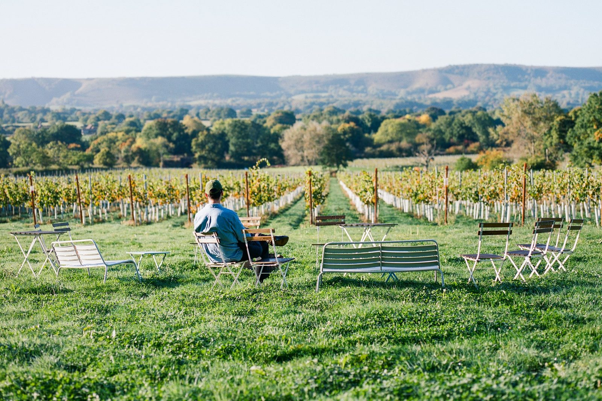

Haywards Heath & Ditchling
Artelium Wine Estate
Estate-verified · October 2026
A wine estate below the South Downs with art among the vines, open Friday to Sunday for tours, lunch and dinner in the Artelium Kitchen.

The visit
In winter Artelium is a Friday-to-Sunday visit: an 11am tour, then lunch or dinner in the Kitchen, with art you can walk out to even if you’ve only come to eat.
Open Friday to Sunday
In winter Artelium is open Friday and Saturday, 12 to 10pm, and Sunday, 12 to 6pm; Mondays are for corporate and industry appointments. In summer it opens on Thursdays too, for the kitchen and tours.
At 11am in winter
Public tours run at 11am in winter, unless you book a private tour. In summer there are three a day, Thursday to Sunday, at 11am, 1pm and 3pm.
Lunch and dinner
In winter the Kitchen serves lunch and dinner on Fridays and Saturdays, and lunch only on Sundays. Once a month there’s a tasting menu takeover with an optional wine flight, at lunch or dinner.
See it without a tour
You can see a few of the art pieces without going on the tour: both are a short walk from the tasting rooms.
Dogs welcome everywhere
Artelium is dog friendly across the whole estate.
Nearest station for a taxi: Burgess Hill, under 10 minutes away, with more frequent trains to London and Brighton. Or walk from Plumpton station in Plumpton Green: about 30 minutes, and a beautiful walk if the weather’s kind.
Common questions
When is Artelium open?
In winter, Friday and Saturday 12 to 10pm and Sunday 12 to 6pm. In summer it opens on Thursdays too.
What time are the tours at Artelium?
At 11am in winter. In summer, Thursday to Sunday at 11am, 1pm and 3pm. Private tours can be booked too.
Is there food at Artelium?
Yes. In winter the Artelium Kitchen serves lunch and dinner on Fridays and Saturdays and lunch on Sundays, with a monthly tasting menu takeover.
Can you see the art at Artelium without a tour?
Yes, a few pieces are a short walk from the tasting rooms.
How do you get to Artelium by train?
Burgess Hill station, then under 10 minutes by taxi, or a 30-minute walk from Plumpton station.
At a glance
- Where
- Streat / Hassocks, East Sussex
- Tours & tastings
- 11am in winter; Thu–Sun 11, 1 and 3 in summer
- Opening
- Winter: Fri–Sat 12–10pm, Sun 12–6pm
- Food on site
- Artelium Kitchen: lunch and dinner Fri–Sat, Sun lunch
- Stay on site
- Checking with the estate
- Weddings
- Yes
- Dogs
- Dog friendly across the estate
- Nearest station
- Burgess Hill (taxi, under 10 min) or Plumpton (30 min walk)
Also on the Haywards Heath & Ditchling
- Ridgeview Wine Estate Ditchling / Hassocks
- Highweald Wine Estate Haywards Heath
- Court Garden Vineyard Ditchling
- Everflyht Ditchling